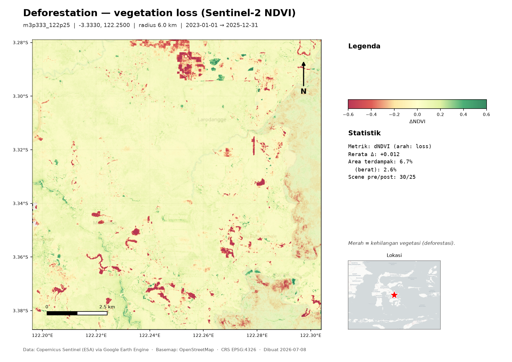
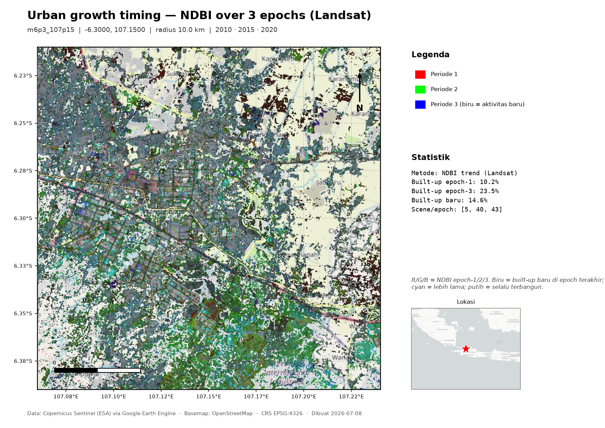
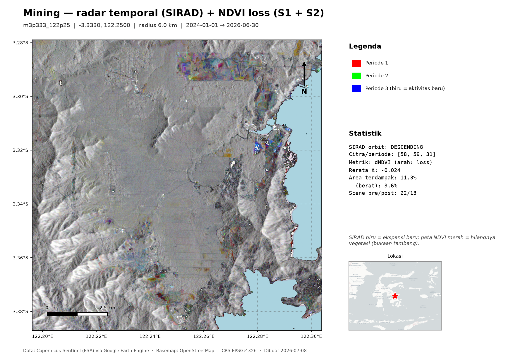

Satellite Change Detection
A hands-on tutorial. Map deforestation, mining, urbanisation, floods, burns and surface-water change anywhere on Earth from free satellite data — then export georeferenced GeoTIFFs and print-ready maps. All in Python, powered by Google Earth Engine and Microsoft Planetary Computer.
Tutorial praktis. Petakan deforestasi, tambang, urbanisasi, banjir, kebakaran, dan perubahan air permukaan di mana saja dari data satelit gratis — lalu ekspor GeoTIFF tergeoreferensi dan peta siap cetak. Semua dengan Python, ditenagai Google Earth Engine dan Microsoft Planetary Computer.

1 · What you'll buildYang akan Anda buat
By the end you'll run a single command like this…
Di akhir tutorial, Anda menjalankan satu perintah seperti ini…
satchange -s deforestation --lat -3.333 --lon 122.25 --radius 6 --map…and get three things for your chosen area:
…dan mendapat tiga berkas untuk area pilihan Anda:
- a quick-look PNG of the change,
- a full-resolution, georeferenced GeoTIFF you can open in QGIS/ArcGIS, and
- a value-added map (A4 PDF + PNG) with legend, scale bar, statistics and a location inset.
- PNG pratinjau perubahan,
- GeoTIFF resolusi penuh tergeoreferensi yang bisa dibuka di QGIS/ArcGIS, dan
- peta value-added (A4 PDF + PNG) dengan legenda, skala, statistik, dan inset lokasi.
You pick a scenario (what kind of change) and a location (a coordinate). The tool selects the right remote-sensing method automatically. No prior GIS coding required.
Anda memilih skenario (jenis perubahan) dan lokasi (koordinat). Alat memilih metode penginderaan jauh yang tepat secara otomatis. Tanpa perlu pengalaman pemrograman GIS.
2 · How it works (the science)Cara kerjanya (sainsnya)
“Change detection” compares the landscape at two (or more) points in time and highlights what changed. Different phenomena leave different spectral or radar fingerprints, so each scenario uses a purpose-built index or method:
“Deteksi perubahan” membandingkan bentang lahan pada dua (atau lebih) titik waktu dan menonjolkan apa yang berubah. Fenomena berbeda meninggalkan sidik jari spektral atau radar yang berbeda, sehingga tiap skenario memakai indeks atau metode khusus:
| ScenarioSkenario | Method & formulaMetode & rumus | Sensor | BasisDasar |
|---|---|---|---|
| deforestation | ΔNDVI < 0. NDVI = (NIR−Red)/(NIR+Red) = (B8−B4)/(B8+B4). Vegetation loss lowers NDVI.Kehilangan vegetasi menurunkan NDVI. | Sentinel-2 | NDVI (Rouse 1973; Tucker 1979) |
| urbanization | ΔNDBI > 0. NDBI = (SWIR−NIR)/(SWIR+NIR) = (B11−B8)/(B11+B8). Built-up reflects more SWIR.Permukaan terbangun memantulkan lebih banyak SWIR. | Sentinel-2 | Zha et al. 2003 |
| burn | dNBR. NBR = (NIR−SWIR2)/(NIR+SWIR2) = (B8−B12)/(B8+B12). Burns lower NBR.Kebakaran menurunkan NBR. | Sentinel-2 | Key & Benson 2006 |
| water | ΔNDWI. NDWI = (Green−NIR)/(Green+NIR) = (B3−B8)/(B3+B8). | Sentinel-2 | McFeeters 1996 |
| flood | SAR water: smooth water gives low VV backscatter. Flood = water in the event window but not the baseline.Air SAR: air halus memberi backscatter VV rendah. Banjir = air pada jendela kejadian tetapi tidak pada baseline. | Sentinel-1 | UN-SPIDER |
| mining | SIRAD: mean VH backscatter of 3 periods → an R/G/B image (new activity = blue). Plus ΔNDVI loss.SIRAD: rerata backscatter VH 3 periode → citra R/G/B (aktivitas baru = biru). Plus kehilangan ΔNDVI. | Sentinel-1 + S2 | Multi-temporal SARSAR multi-temporal |
| urban-trend | NDBI at 3 epochs → R/G/B timing composite. Blue = newest growth, white = built all epochs.NDBI di 3 epoch → komposit waktu R/G/B. Biru = pertumbuhan terbaru, putih = terbangun sepanjang waktu. | Landsat 5, 8/9 | Multi-epoch NDBI (archive to 1984; L7 skipped — SLC-off)NDBI multi-epoch (arsip sejak 1984; L7 dilewati — SLC-off) |
How clouds are handledCara menangani awan
Optical scenarios never rely on a single image. For each period the tool builds a cloud-masked median composite of many Sentinel-2 scenes: every scene is masked pixel-by-pixel using the Scene Classification (SCL) band, then the median is taken. The result is effectively cloud-free even in cloudy regions. The standalone Sentinel-2 downloader additionally prefers a single scene with ≤10% cloud, falling back to the composite when none exists.
Skenario optik tak pernah bergantung pada satu citra. Untuk tiap periode, alat menyusun median composite bebas awan dari banyak scene Sentinel-2: tiap scene di-mask per-piksel memakai band Scene Classification (SCL), lalu diambil mediannya. Hasilnya praktis bebas awan bahkan di wilayah berawan. Pengunduh Sentinel-2 mandiri juga mengutamakan satu scene dengan awan ≤10%, dan beralih ke composite bila tak ada.
3 · SetupPersiapan
You need Python 3.11+. The Earth Engine backend needs a free Google Earth Engine account (sign up); the Planetary Computer backend needs no account at all.
Anda memerlukan Python 3.11+. Backend Earth Engine butuh akun Google Earth Engine gratis (daftar); backend Planetary Computer tanpa akun sama sekali.
- Install the packagePasang paket
Gives you thepip install 'satchange[all]' # everything # or leaner: pip install 'satchange[gee]' · pip install 'satchange[mpc,maps]'satchangeandsatmapcommands. To work from source instead:git clone https://github.com/firmanhadi21/rs-change-detection && cd rs-change-detection && pip install -e '.[all]'— thenpython3 detect.py …works identically. Memberi perintahsatchangedansatmap. Untuk memakai dari sumber:git clone https://github.com/firmanhadi21/rs-change-detection && cd rs-change-detection && pip install -e '.[all]'— lalupython3 detect.py …berfungsi sama. - Authenticate Earth Engine (GEE backend only)Autentikasi Earth Engine (backend GEE saja)
Opens a browser to link your Google account, or place a service-account key atearthengine authenticate./scripts/config/ee-geodetic.json. Skip this entirely if you use--backend mpc. Membuka browser untuk menautkan akun Google, atau taruh kunci service account di./scripts/config/ee-geodetic.json. Lewati bila memakai--backend mpc. - Check it's workingCek berjalan
Should print the six available scenarios. Harusnya menampilkan enam skenario.satchange --list
--backend mpc to any command — Microsoft Planetary Computer streams Sentinel-1/2 & Landsat Cloud-Optimized GeoTIFFs and processes them locally (comes with satchange[mpc]). Outputs and maps are identical.--backend mpc pada perintah apa pun — Microsoft Planetary Computer mengalirkan COG Sentinel-1/2 & Landsat dan memprosesnya lokal (termasuk di satchange[mpc]). Keluaran dan peta identik.4 · Your first detectionDeteksi pertama Anda
Let's map vegetation loss around a coordinate. Pick any lat/lon (decimal degrees; south and west are negative).
Mari petakan kehilangan vegetasi di sekitar koordinat. Pilih lat/lon apa saja (derajat desimal; selatan dan barat negatif).
satchange -s deforestation --lat -3.333 --lon 122.25 --radius 6The tool builds a square area of interest (half-side = radius km), makes a cloud-free Sentinel-2 NDVI composite for a baseline year and a recent year, subtracts them, and downloads the result. You'll see something like:
Alat membangun area minat persegi (setengah-sisi = radius km), membuat composite NDVI Sentinel-2 bebas awan untuk tahun dasar dan tahun terkini, menguranginya, lalu mengunduh hasilnya. Anda akan melihat kira-kira:
=== Change detection: deforestation ===
Location: -3.333, 122.25 radius 6.0 km [m3p333_122p25]
Downloading dndvi PNG... Saved: images/deforestation_dndvi_m3p333_122p25.png
Downloading dndvi GeoTIFF... Saved: data/deforestation_dndvi_m3p333_122p25.tif
=== Results ===
"pct_affected": 6.3, "pct_severe": 2.7, "scenes_pre": 30, "scenes_post": 25 …- can confuse the shell if you use -l. Either use --lat/--lon (above) or attach the value with =: -l=-3.333,122.25.- di depan bisa membingungkan shell bila memakai -l. Gunakan --lat/--lon (di atas) atau sambungkan nilai dengan =: -l=-3.333,122.25.5 · Reading the outputsMembaca keluaran
| FileBerkas | What it isIsinya | Open withBuka dengan |
|---|---|---|
…_<name>.png | Coloured quick-lookPratinjau berwarna | Any image viewerPenampil gambar apa saja |
…_<name>.tif | Full-resolution, georeferenced GeoTIFF (EPSG:4326)GeoTIFF resolusi penuh tergeoreferensi (EPSG:4326) | QGIS, ArcGIS, rasterio |
…_map.pdf / .png | Value-added map (with --map)Peta value-added (dengan --map) | PDF / image viewer |
stats.json | Statistics: % area affected, mean Δ, scene countsStatistik: % area terdampak, rerata Δ, jumlah scene | Any text editorEditor teks apa saja |
output/<timestamp>_<scenario>_<name>_<id>/ — PNG, GeoTIFF, stats, metadata (and maps) together, so runs never overwrite each other.output/<timestamp>_<skenario>_<nama>_<id>/ yang unik — PNG, GeoTIFF, statistik, metadata (dan peta) jadi satu, sehingga antar-run tak saling menimpa.For optical scenarios the change layer uses a diverging palette: red = loss, pale = little change, green = gain. The stats.json quantifies it — e.g. pct_affected is the share of the area whose change passed the threshold.
Untuk skenario optik, layer perubahan memakai palet divergen: merah = kehilangan, pucat = sedikit berubah, hijau = pertambahan. stats.json mengukurnya — mis. pct_affected adalah proporsi area yang perubahannya melewati ambang.
6 · Every scenarioSetiap skenario
List them any time with satchange --list. Commands:
Lihat daftarnya kapan saja dengan satchange --list. Perintah:
# Deforestation / vegetation loss (default baseline vs recent year)
satchange -s deforestation --lat -3.333 --lon 122.25
# Mining — radar temporal (SIRAD) + NDVI loss, two products
satchange -s mining --lat -3.333 --lon 122.25
# Urbanisation — built-up (NDBI) gain
satchange -s urbanization --lat -6.2 --lon 106.8 --radius 12
# Surface-water change (NDWI)
satchange -s water --lat -0.5 --lon 117.1
# Flood — needs an explicit baseline and event window
satchange -s flood --lat 27.2 --lon 68.3 \
--pre 2022-07-01:2022-07-25 --post 2022-08-20:2022-09-10
# Burn severity — needs pre-fire and post-fire windows
satchange -s burn --lat -7.5 --lon 110.4 \
--pre 2025-08-01:2025-08-20 --post 2025-09-10:2025-09-30
# Urban growth timing across 3 epochs (Landsat; default 2010/2015/2020)
satchange -s urban-trend --lat -6.30 --lon 107.15 --radius 10 --map--pre START:END --post START:END (format YYYY-MM-DD:YYYY-MM-DD). Other scenarios have default windows you can still override.--pre START:END --post START:END (format YYYY-MM-DD:YYYY-MM-DD). Skenario lain punya jendela default yang tetap bisa diubah.--method. Sentinel-2 built-up: NDBI (default), UI, BU (=NDBI−NDVI), IBI. Thermal built-up NDISI, EBBI auto-switch to Landsat 8/9 (they need a thermal band Sentinel-2 lacks). Each method has its own default thresholds — tune with --thr/--severe.--method. Built-up Sentinel-2: NDBI (default), UI, BU (=NDBI−NDVI), IBI. Indeks termal NDISI, EBBI otomatis beralih ke Landsat 8/9 (butuh band termal yang tak ada di Sentinel-2). Tiap metode punya ambang default — setel dengan --thr/--severe.-s urban-trend, which runs on Landsat (archive back to 1984) and maps NDBI at three epochs to R/G/B in one image (white = built the whole time, blue = newest growth): satchange -s urban-trend --lat -6.30 --lon 107.15 --epochs 2010-01-01:2010-12-31,2015-01-01:2015-12-31,2020-01-01:2020-12-31-s urban-trend yang berbasis Landsat (arsip sejak 1984) dan memetakan NDBI tiga epoch ke R/G/B dalam satu citra (putih = terbangun terus, biru = paling baru): satchange -s urban-trend --lat -6.30 --lon 107.15 --epochs 2010-01-01:2010-12-31,2015-01-01:2015-12-31,2020-01-01:2020-12-31
urban-trend over Cikarang/Bekasi (east Jakarta). Built-up grew 10% (2010) → 23% (2020), 15% newly built. White = built the whole time; blue/cyan = newer growth.urban-trend di Cikarang/Bekasi (timur Jakarta). Built-up tumbuh 10% (2010) → 23% (2020), 15% baru. Putih = terbangun terus; biru/cyan = pertumbuhan lebih baru.7 · Make a map productMembuat produk peta
Add --map to any run to render an A4-landscape map sheet (PDF + PNG) per product: OpenStreetMap basemap, the change layer, title, legend, a statistics panel, a location inset, coordinate grid, scale bar and north arrow.
Tambahkan --map pada run apa pun untuk membuat lembar peta A4 landscape (PDF + PNG) per produk: basemap OpenStreetMap, layer perubahan, judul, legenda, panel statistik, inset lokasi, grid koordinat, skala, dan panah utara.
satchange -s mining --lat -3.333 --lon 122.25 --map
Already have results and just want to re-render (no Earth Engine needed)? Every run drops a .meta.json sidecar, so:
Sudah punya hasil dan ingin render ulang (tanpa Earth Engine)? Tiap run menulis sidecar .meta.json, jadi:
satmap output/20260708-2226_deforestation_x_fac24e # a run folder
satmap output/<run>/mining_sirad_x.tif --basemap gray # or one .tifMaps land in maps/. Tweak the layout in mapmaker.py and re-run instantly.
Peta tersimpan di maps/. Ubah tata letak di mapmaker.py lalu jalankan ulang seketika.
8 · Adapt it to your own areaMenyesuaikan untuk area Anda
Pick a locationPilih lokasi
Find coordinates by right-clicking a spot in Google Maps (it copies lat, lon), or from OpenStreetMap. Choose a --radius to match the feature: a few km for a single mine or town, 10–20 km for a flood plain or a fire.
Cari koordinat dengan klik kanan di Google Maps (menyalin lat, lon), atau dari OpenStreetMap. Pilih --radius sesuai objek: beberapa km untuk satu tambang atau kota, 10–20 km untuk dataran banjir atau kebakaran.
Save a named presetSimpan preset bernama
Add reusable places to sites.py and call them with --site:
Tambahkan lokasi yang sering dipakai ke sites.py dan panggil dengan --site:
SITES = {
"my_area": {
"label": "My study area",
"lat": 1.234, "lon": 103.456, "radius_km": 8.0,
"sentinel2_date": "2026-06-15",
"sirad_periods": [("2024-01-01","2024-12-31"),
("2025-01-01","2025-12-31"),
("2026-01-01","2026-06-30")],
"ndvi_pre": ("2023-01-01","2023-12-31"),
"ndvi_post": ("2026-01-01","2026-06-30"),
},
}satchange -s deforestation --site my_area --mapAdd a brand-new scenarioTambah skenario baru
Most scenarios are one dictionary entry in scenarios.py. To add, say, a moisture-change scenario using NDWI on a custom threshold you only add a registry entry — the generic optical-change engine does the rest:
Kebanyakan skenario hanya satu entri dictionary di scenarios.py. Untuk menambah, misalnya, skenario perubahan kelembapan memakai NDWI dengan ambang khusus, cukup tambahkan satu entri — mesin perubahan optik generik menangani sisanya:
"moisture": {
"label": "Moisture change (NDWI)",
"run": _optical("NDWI", "gain", 0.08, 0.20), # index, direction, thresholds
"radius": 10.0, "needs": "pre_post",
"pre": ("2023-01-01","2023-12-31"),
"post": ("2025-01-01","2025-12-31"),
"interpretation": "Greener = wetter.",
},New spectral indices go in indices.py (a one-line normalised difference). Radar or bespoke methods get a small run_* function in scenarios.py.
Indeks spektral baru masuk ke indices.py (satu baris normalized difference). Metode radar atau khusus memakai fungsi run_* kecil di scenarios.py.
9 · Reproducibility & dataReproduksibilitas & data
- Data: Copernicus Sentinel-1 (radar) and Sentinel-2 (optical), free and open, courtesy ESA, processed in Google Earth Engine.
- AOI: a square centred on your coordinate (half-side = radius), axis-aligned in EPSG:4326.
- Orbit auto-selection: radar scenarios check both ascending and descending orbits and use whichever has imagery in every period.
- Outputs are regenerable, so results and maps are git-ignored; only code and this tutorial are versioned.
- Data: Copernicus Sentinel-1 (radar) dan Sentinel-2 (optik), gratis dan terbuka, dari ESA, diproses di Google Earth Engine.
- AOI: persegi berpusat di koordinat Anda (setengah-sisi = radius), sejajar sumbu di EPSG:4326.
- Pemilihan orbit otomatis: skenario radar memeriksa orbit ascending dan descending lalu memakai yang punya citra di tiap periode.
- Keluaran bisa dibuat ulang, jadi hasil dan peta di-git-ignore; hanya kode dan tutorial ini yang diversikan.
10 · TroubleshootingPemecahan masalah
| SymptomGejala | FixSolusi |
|---|---|
No Sentinel-2 scenes in pre/post window | Widen your --pre/--post dates or increase --radius. Very cloudy tropics may need a longer window.Perlebar tanggal --pre/--post atau perbesar --radius. Tropis sangat berawan mungkin butuh jendela lebih panjang. |
No orbit covers all periods | Enlarge the radius or shift the period dates; Sentinel-1 coverage is sparse in some years/areas.Perbesar radius atau geser tanggal periode; cakupan Sentinel-1 jarang di sebagian tahun/area. |
| Earth Engine auth errorsGalat autentikasi Earth Engine | Re-run earthengine authenticate, or place a valid service-account key at scripts/config/ee-geodetic.json.Jalankan ulang earthengine authenticate, atau taruh kunci service account valid di scripts/config/ee-geodetic.json. |
Basemap missing / Basemap hilang / EPSG code unknown | A stale external PROJ database (e.g. from an OTB install) is shadowing PROJ. The tool clears PROJ_LIB; if it persists, unset PROJ_LIB.Basis data PROJ eksternal usang (mis. dari OTB) menutupi PROJ. Alat menghapus PROJ_LIB; bila masih, jalankan unset PROJ_LIB. |
| Direct GeoTIFF download refusedUnduhan GeoTIFF langsung ditolak | Very large AOIs exceed Earth Engine's limit — reduce --radius, or use --drive to export to Google Drive.AOI sangat besar melewati batas Earth Engine — kecilkan --radius, atau pakai --drive untuk ekspor ke Google Drive. |
11 · Further readingBacaan lanjut
- Zha, Gao & Ni (2003). Use of NDBI in automatically mapping urban areas from TM imagery. Int. J. Remote Sensing 24(3).
- Key & Benson (2006). Landscape Assessment: the Normalized Burn Ratio (NBR/dNBR). USDA Forest Service, FIREMON.
- UN-SPIDER. Recommended Practice: Flood Mapping with Sentinel-1 SAR in Google Earth Engine.
- UN-SPIDER. Normalized Burn Ratio — in detail.
- Earth Lab. Work with the Differenced Normalized Burn Index (dNBR).
- Google Earth Engine. Sentinel-1 SAR guide · Sentinel-2 SR Harmonized.